SDW快速出图技术路线
ASD线路出图
简介
3D体验平台（2021XPF3以上）中针对土木工程行业具有专业的出图模块，其中的Drafting Template Design应用模块，有专业的线路出图功能。线路出图功能可通过对Civil 3D Design的水平线路和纵面线路进行平总曲线的出图。平台中默认的出图标注方式是根据国外出图规范定义的，无法满足中国本地应用需求，针对国内出图规范，对相应的模板进行自定义，以使平台满足本地化线路出图的专业要求。
配置资源集
导入出图模板以及目录Alignment drawing templates和NewAlignment view drawing templates A.1，切换到所有者角色，进入Data Setup模块设置出图模板资源


点开ASD工程制图资源，编辑各模板所对应的目录

把资源绑定到合作区，保存并切换到领导角色。

图框模板
新建ASD工程图模板，进入到Drafting Template Design模块，在工具栏智能模板管理下，点击框架模板新建框架模板。

用草图轮廓命令，画出矩形轮廓，在注释栏选用标注命令，约束好矩形框的长、宽

约束完成之后，双击尺寸约束选择驱动几何图形；在结构树模板参数和规则下，插入actions，编辑脚本：
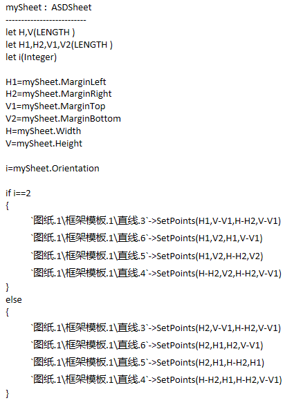
其中ASDSheet.Orientation为图纸的方向，当输出为'1'时，图纸为纵向，输出为'2'时，图纸为横向；

在确定了图纸的类型之后，图纸的长宽尺寸是固定的，我们只需要提取到宽度和高度尺寸，赋予到标注即可
ASDSheet. Height -------------------//图纸高度（长度参数）
ASDSheet. Width -------------------//图纸宽度（长度参数）
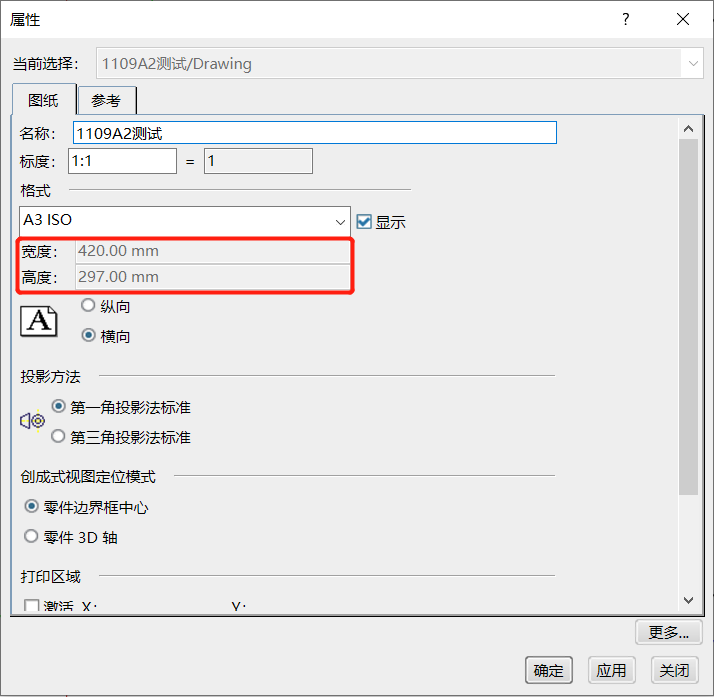
ASDSheet.MarginBottom-------------------//图纸工作区的底边距
ASDSheet.MarginLeft-------------------//图纸工作区的左边距
ASDSheet.MarginRight-------------------//图纸工作区的右边距
ASDSheet.MarginTop-------------------//图纸工作区的左顶边距
完成之后隐藏标注尺寸，保存并把框架模板加入到图框模板catalog
上述为通用参数化框架，如果需要特殊框架，可以新建框架模板之后，用草绘功能根据纸张尺寸画出所需要的框架。
标题栏模板
在刚才的Drafting Template Design模块继续编辑标题栏模板，点击标题块模板图标，新建标题栏模板；利用草图轮廓命令，草绘完成大致标题栏的样式。

在结构树上添加需要的参数

在设计好的标题栏相应位置，新建文本，并根据图框的需求输入文本内容
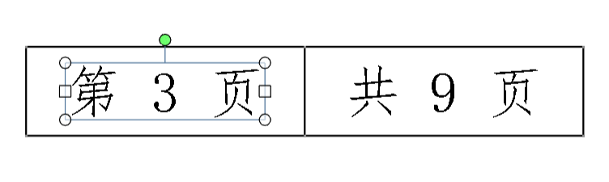
文本框内的内容分为固定文本和参数文本，其中固定文本只需要双击文本框填写好相应文本即可，参数文本需要链接到结构树上的参数，下面以页数为例：
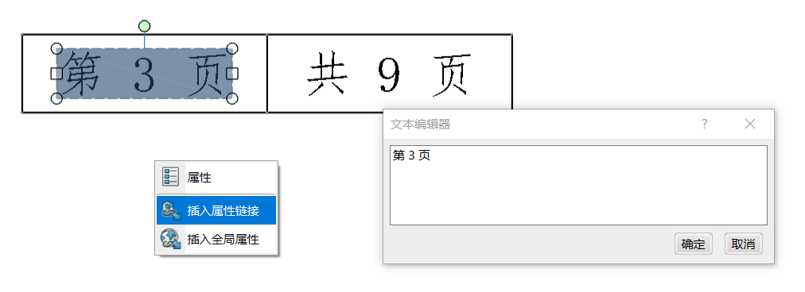
双击文本框，弹出文本编辑器，右键文本框，弹出插入属性链接对话框
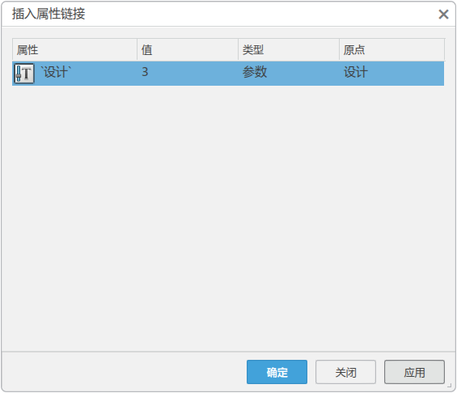
在结构树上选择需要链接的参数，把此参数选择到插入属性链接对话框，再次单击选中对话框中的参数，点击确定，把结构树上的参数和文本框中的文本相结合

参数链接完成之后，在模板和参数规则下插入actions脚本，让参数受图纸约束

DateFormat("%Y")为系统时间年
DateFormat("%m")为系统时间月
My_sheet.SheetScale 为当前的图纸比例
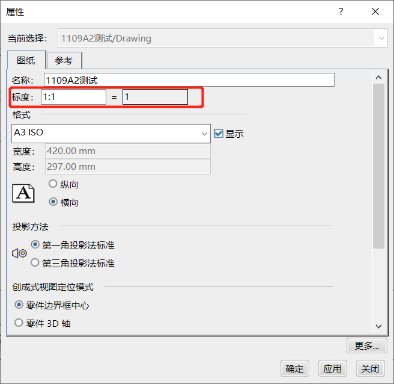
mySheet.IsCurrentSheet==True-------------------//当前页
上述脚本旨在控制结构树上的用户参数，进而通过脚本链接控制文本内容，比如在实例化的时候，文本内容会判断出当前的图纸在工程图的位置，检测出系统当前的时间等，节省了相关人员处理标题栏的时间。
设置完成之后保存到标题栏目录。
图纸模板
完成图框模板和标题栏模板之后，建立图纸模板，打开图纸模板定义，对话框中定义和工作区中的内容，我们在编辑图框和标题栏时，已经把相应参数通过脚本提取出来，并关联到参数中

在修饰工作区内选择目录，会弹出在全局资源中加载到ASD中的目录，选择需要设置的模板，放置规则根据需求设置在图纸的位置。设置完成之后保存图纸模板，添加到图纸模板目录。
路线平曲线
直线段标注
进入Drafting Template Design模块，新建详图，建立注释模板，在注释栏下创建文本，文本内容R-∞
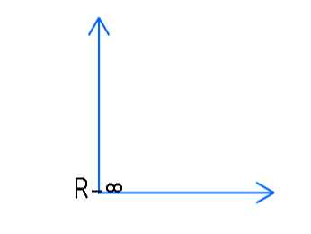
设置文字标注相应字体DS ISO 1，定位点为中部居中，参考为父级零部件

新建actions并编辑脚本
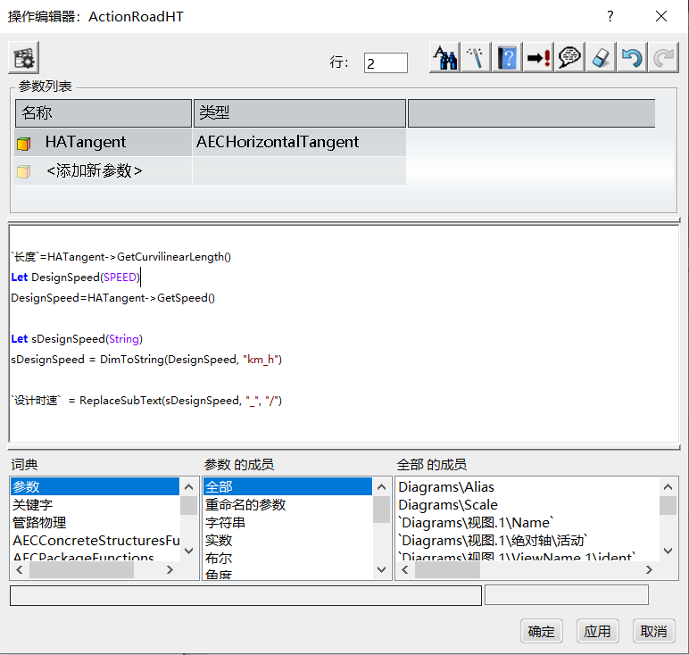
输入条件HATangent : AECHorizontalTangent为平曲线直线段，"长度""设计时速"为隐藏的文本注释，在新建平曲线出图的时候，只显示R-∞
圆弧段标注
新建详图，建立注释模板，在注释栏下创建文本，文本内容R-0m
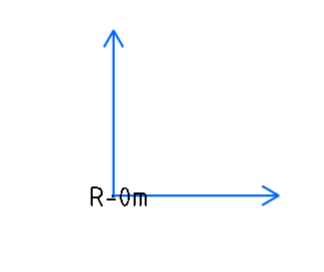
文本设置参照直线段文字标注，新建actions并编辑脚本

输入条件HAArc : AECHorizontalArc为平曲线圆弧段，HAArc->GetRadius()为获取平曲线曲线段半径
缓和曲线端点标注
新建详图，建立注释模板，添加字符串参数sAheadStation、'关键点符号'，绘制箭头并添加文本注释如下：

文本注释添加参数链接，添加方式同标题栏，添加actions并编辑脚本
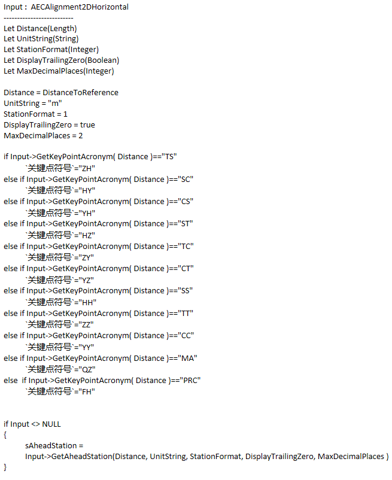
Input->GetKeyPointAcronym-------------------//关键点首字母缩略词
因脚本函数只能获取固定字符，且此字符不符合国内标注习惯，所以添加判断语句if---else if---else if---让标注形式符合国内使用习惯
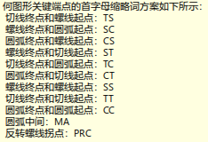

输入Input : AECAlignment2DHorizontal为平曲线
新建注释模板为缓和曲线端点，建立子注释模板，并选择刚才建立的注释模板为子模板，以此缓和曲线端点为特征加入到目录并保存。
圆弧中点标注
新建详图，建立注释模板，添加字符串参数sAheadStation，绘制直线并添加文本注释如下：
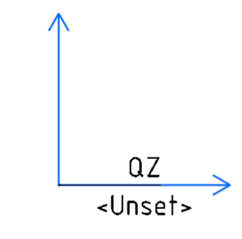
文本注释添加参数链接，添加方式同标题栏，添加actions并编辑脚本

圆弧中点标注曲中点QZ固定，不必设置参数，直接建立文本标注QZ即可，输入Input : AECAlignment2DHorizontal为平曲线，Input->GetAheadStation获取里程。
新建注释模板为圆弧中点，建立子注释模板，并选择刚才建立的注释模板为子模板，以此圆弧中点为特征加入到目录并保存。
主里程点标注
新建详图，建立注释模板，添加字符串参数DistanceToReference、sStationing，绘制直线并添加文本注释如下：

文本注释添加参数链接，添加方式同标题栏，添加actions并编辑脚本
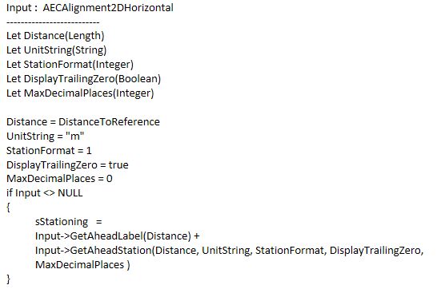
输入Input : AECAlignment2DHorizontal为平曲线
新建规则，根据文本标注的框架定义直线的位置：

Point1_H（长度）：第一个点的水平坐标
Point1_V（长度）：第一个点的垂直坐标
Point2_H（长度）：第二个点的水平坐标
Point2_V（长度）：第二个点的垂直坐标
Point3_H（长度）：第三个点的水平坐标
Point3_V（长度）：第三个点的垂直坐标
Point4_H（长度）：第四个点的水平坐标
Point4_V（长度）：第四个点的垂直坐标
新建注释模板为主里程点，建立子注释模板，添加参数Major Interval=200m，Minor Interval=100m，并选择刚才建立的注释模板为子模板，以此主里程点为特征加入到目录并保存。
次里程点标注
新建详图，建立注释模板，添加字符串参数DistanceToReference、sStationing，绘制直线并添加文本注释如下：

文本注释添加参数链接，添加方式同标题栏，添加actions并编辑脚本
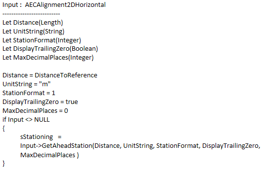
输入Input : AECAlignment2DHorizontal为平曲线
新建规则，根据文本标注的框架定义直线的位置：

新建注释模板为主里程点，建立子注释模板，并选择刚才建立的注释模板为子模板，以此主里程点为特征加入到目录并保存。
水平曲线规则集
新建规则集模板，并修改名称为道路水平规则集，右键规则集选择对象添加注释规则模板，定义名称Tangent

在条件栏添加脚本

Input.IsASortOf("AECHorizontalTangent")选择输入为直线时，注释为真；
选择注释类型为参数，编辑参数注释，选择模板为保存的直线段注释模板
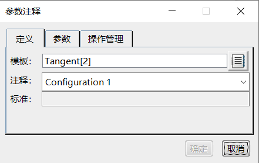
定义放置策略为沿项目

同样的方式，定义规则集内的圆弧段标注、缓和曲线拐点标注、圆弧中点标注、主里程点标注、次里程点标注等。
指北针
进入工程制图模板设计模块，打开Alignment view drawing templates图纸文件，新建详图，新建2D部件，在此2D部件上画出所需要的指北针样式，如下图

新建标签模板，把此2D部件转换为标签模板，在智能模板注释工具条下，新建注释模板，定义模板名称，在注释工具条下选择初始化标签
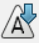
，把标签模板实例化到注释模板内，并定义角度参数Angle_N
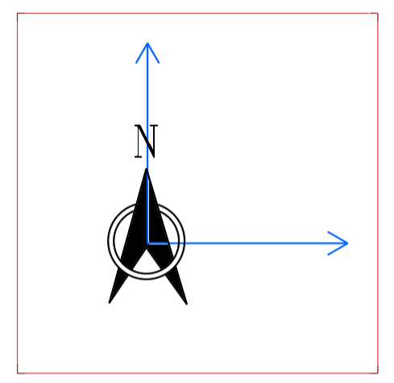

在关系集下添加规则，定义规则内容，使2D部件角度和Angle_N关联起来

保存，把模板添加到Alignment drawing templates目录。
修改交点表表头
打开文件win_b64\resources\Civil\Alignment\PITableFormat.xsl，修改表头
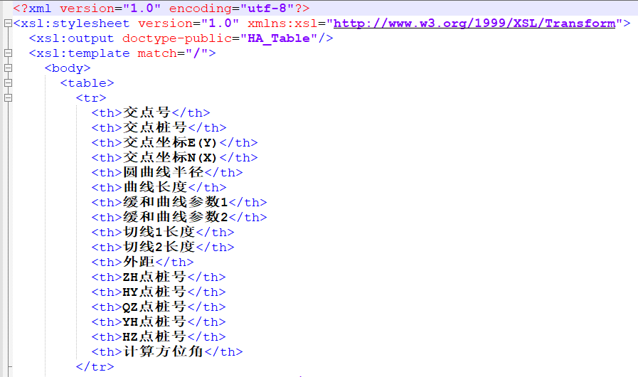
水平视图
新建视图模板，根据需求定义缩放比例为1：1000、1：200等；

定义视图更新规则，添加规则集内的直线、圆弧等规则集

定义指南针

保存视图模板并加入到目录。
线路纵曲线
直线段标注
新建详图，建立注释模板，在注释栏下创建文本，文本内容String
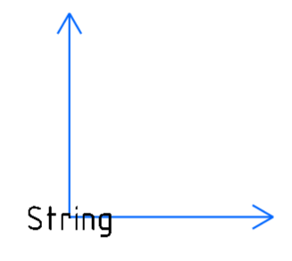
新建actions并编辑脚本
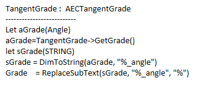
输入TangentGrade : AECTangentGrade为纵曲线直线段，TangentGrade->GetGrade()为坡度，以下内容是把"%_angle"换成"%"。
保存并加入到目录。
圆弧段标注
新建详图，建立注释模板，在注释栏下创建文本，文本内容为纵曲线圆弧段的关键参数R、T、E，用草绘功能按照国内标注样式画出下图所示线段；新建参数R、T、E，并链接到文本标注；并把圆弧端点2D模板实例化到注释模板

添加并编辑actions；

输入VerticalCurve: AECVerticalCurve为纵曲线圆弧段；
VertCurve.GetVerticalAlignmentSegmentInfo-------------------//检索有关垂直对齐线段的相关信息，输出半径R；
VertCurve.GetVPIElevation()----------------//获取交点标高
VertCurve.GetExtremumPointElevation ()----------------//获取曲线极值点标高
判断曲线弧度，上弧隐藏下半部分线段，反之隐藏上半部分曲线；
VertCurve.GetVPI(x1,y1) ----------------//交点坐标
VertCurve.GetStartPosition(x2,y2) ----------------//起点坐标
T=sqrt((x1/1mm-x2/1mm)2+(y1/1mm-y2/1mm)2)*1mm----------------//获取切线长。
保存并加入到目录。
汉化竖曲线表表头
打开win_b64\resources\Civil\Alignment下*** Format.xsl文件，修改文件title text

竖直曲线规则集
新建规则集模板，并修改名称为道路竖直规则集，右键规则集选择对象添加注释规则模板，定义名称Tangent
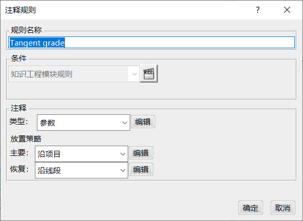
在条件栏添加脚本

Input.IsASortOf("AECTangentGrade")输入为竖曲线直线段时，标注为真；
选择注释类型为参数，编辑参数注释，选择模板为保存的直线段注释模板

定义放置策略为沿项目
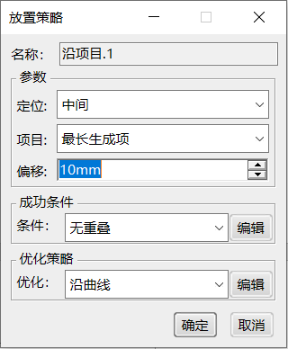
同样的方式，定义规则集内的圆弧段标注。
垂直试图
新建视图模板，根据需求定义缩放比例为1：1000、1：200等；
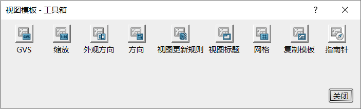

定义视图更新规则，添加规则集内的直线、圆弧规则集

保存视图模板并加入到目录。
线路出图
添加环境变量
找到文件B423\CATEnv\ Env.txt并打开，添加以下环境变量，保存文件重启客户端。
CEG_SUBGRADE=1
CEG_DRAINAGE=1
SDW_ALIGNMENT_VIEW_LA=1
DRW_ALLOW_AITACMODELER=1
SDW_VA_ANNOTATIONS_LA=1
SDW_STATIONING_GRID_LA=1
SDW_TRANSCRV_KEYPOINT_ANNOTATION_LA=1
ASD_VERTICAL_ALIGNMENT_VIEW_LA=1
CEG_HorizontalViewMargin=1
SDW_VA_GRID_LA=1
SDW_BRIDGE_GRID_LA=1
SDW_SECTIONING_LA=1
SDW_AUTOMATION_ALIGNMENT_LA=1
set SDW_BATCH_LA=1
CATDX_IFC_Alignment=1
CEG_CAA_Alignments=1
CEG_REBAR_DRAWING=1
SddSteelConnection=1
线路出图
新建ASD工程图，点击创建对齐视图
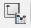
，
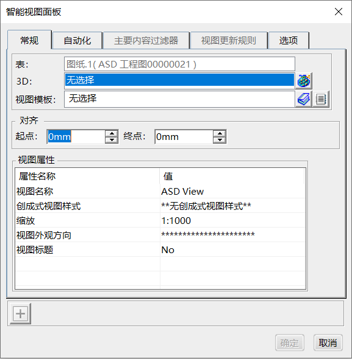
到模型窗口选择水平对齐
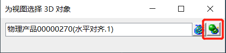
点击目录，选择视图模板

确定，创建平曲线图纸
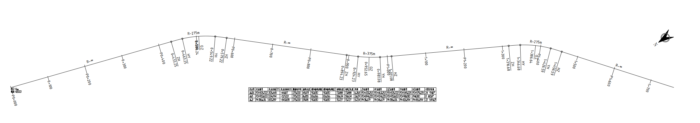
再次创建对齐视图，选择垂直对齐
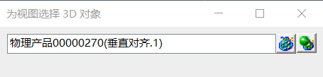
点击目录，选择视图模板
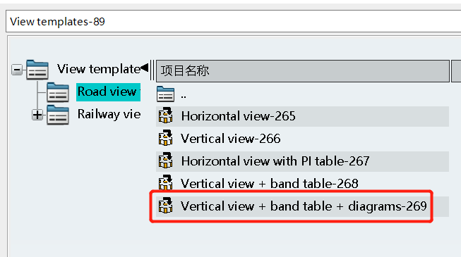
确定，创建竖曲线图纸